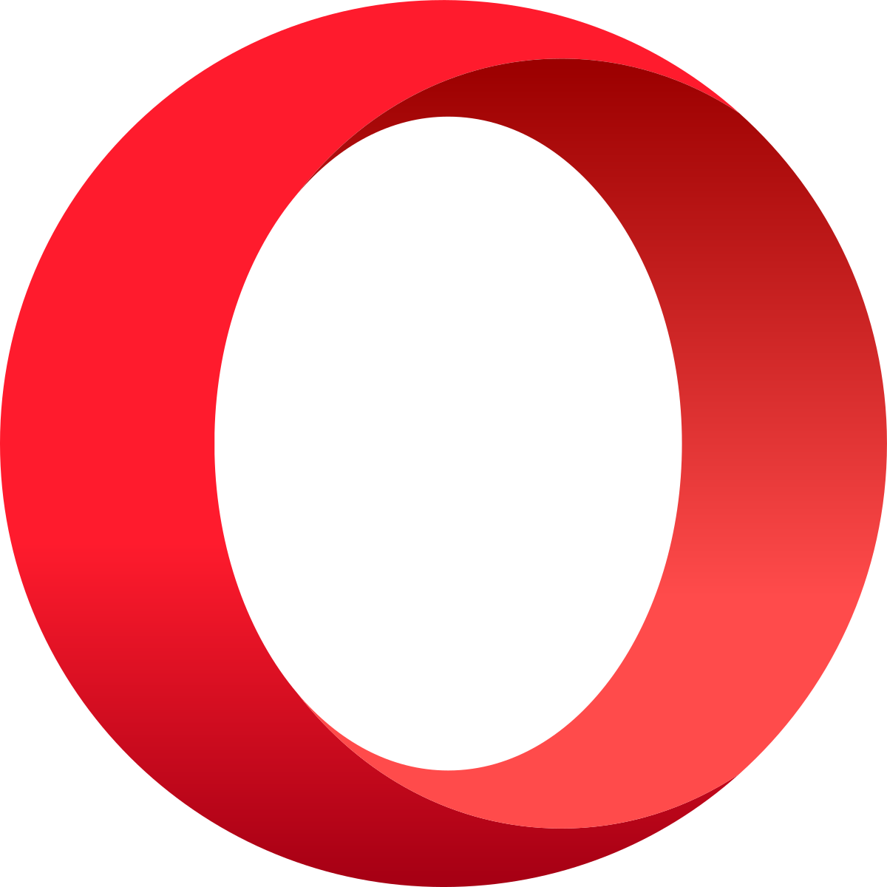

Краткое описание браузеров
| Логотип |
Описание |
 |
Google Chrome — браузер, разрабатываемый компанией Google на
основе свободного браузера Chromium и движка Blink (до апреля 2013
года использовался WebKit). Первая публичная бета-версия для
Windows вышла 2 сентября 2008 года, а первая стабильная — 11
декабря 2008 года. По данным StatCounter, Chrome используют около
300 миллионов интернет-пользователей, что делает его самым
популярным браузером в мире.
|
 |
Mozilla Firefox — свободный браузер на движке Gecko,
разработкой и распространением которого занимается Mozilla
112
Corporation. Третий по популярности браузер в мире и первый среди
свободного ПО — в июле 2014 года.
|
|
Internet Explorer — программа-браузер, разрабатываемая
корпорацией Microsoft с 1995 года. Входит в комплект операционных
систем семейства Windows.
Согласно разным методам подсчета, доля Internet Explorer среди
пользователей варьировала между 24,64 % и 58,15 % (на январь 2014
года).
|
|  |
Opera — веб-браузер и пакет прикладных программ для работы в
Интернете, выпускаемый компанией Opera Software. Разработан в 1994
году группой исследователей из норвежской компании Telenor. С 1995
года — продукт компании Opera Software, образованной авторами
первой версии браузера
|
 |
Safari — браузер, разработанный корпорацией Apple и входящий в
состав OS X и iOS. Стабильно занимает четвёртое место по числу
пользователей (рыночная доля в июне 2014 года — 9,17%). В России
браузер не столь популярен, по состоянию на май 2013 он занимал
шестую позицию c 4,1% пользователей. |
{kind=link}
{kind=link}
{kind=link}
{kind=link}